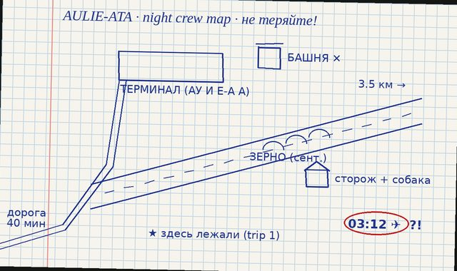

Aulie-Ata airport: about 8 km south-west of the town, a Soviet regional airport, flights to Frunze, Tashkent, Moscow in summer. Closed in 1994. The runway is 3.5 km long, longer than it needed to be, nobody knows why (everybody knows a reason).
Now: in autumn the farmers dry grain on it. Sometimes, in bad weather, planes that can't land at Talas Air Base land here instead and wait. Otherwise: wind, birds, us.
